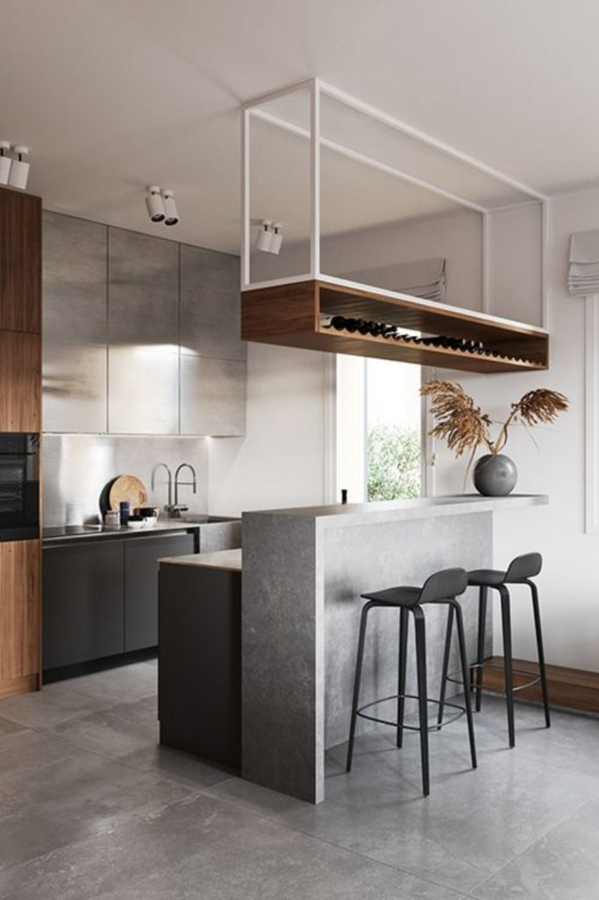

Accesorii pentru gătit | FAVI.ro
2021.03.24 15:44

1 Autentifică-te Mobilă Decorațiuni Textile Iluminat Reconstrucție Bucătărie și sufragerie Echipamente baie Living Dormitor Camera copiilor Hol și coridor Birou Grădină Promoții Toate categoriile Mobilă Canapele Canapele sofa Canapele, fotolii, scaune Paturi Dulapuri și comode Linii de bucătărie Mese și măsuțe Scaune Seturi de mobilă Spații de depozitare Mobilă de birou Mobilă de grădină Mobilă de hol Cuiere și suporturi Mobilă pentru copii Mobilă baie Mobilă de balcon Decorațiuni Ceasuri Tapete Autocolante de perete Tablouri Decorațiuni suspendate Ghivece de flori Jardiniere Vaze Flori decorative Stropitori Rame foto Semne Postere Sfeșnice și lumânări Decorațiuni copii Oglinzi Animale de companie Mici decorațiuni Boluri decorative Textile Lenjerii de pat Textile pentru dormitor Perne decorative Perdele Draperii Textile pentru copii Textile pentru bucătărie Textile baie Covoare Metraje Huse Jaluzele Galerii perdele Perne mobilă de exterior Textile pentru afară Iluminat Lustre Corpuri de iluminat și lustre Plafoniere Spoturi încorporate Aplice Lampadare Veioze Iluminat decorativ Becuri decorative Abajururi Iluminat pentru copii Iluminat exterior Ventilatoare tavan Iluminat baie Iluminat LED Reconstrucție Reconstrucție bucătărie Reconstrucție baie Faianță Pietre de fațadă Panouri de perete Cărămizi de sticlă Pardoseli Robinete de apă Uși și tocuri de ușă Cutii poștale Șemineuri și sobe Șemineuri bio Comutatoare și prize Căsuțe de grădină Garduri Saune și accesorii Calorifere design Bucătărie și sufragerie Mobilă de bucătărie Servirea mesei Organizare bucătărie Depozitare alimente Accesorii pentru gătit Accesorii pentru bucătărie Accesorii coacere Textile pentru bucătărie Aparatură de bucătărie Reconstrucție bucătărie Linii de bucătărie Faianță pentru bucătărie Blaturi de bucătărie Chiuvete de bucătărie Baterii de bucătărie Echipamente baie Mobilă baie Căzi Dușuri și cădițe Chiuvete baie Baterii baie Accesorii baie Oglinzi baie Textile baie Accesorii WC Paravane cadă Accesorii cadă Toalete și bideuri Reconstrucție baie Faianță baie Calorifere portprosop Măști cadă Iluminat baie Living Canapele Canapele sofa Fotolii Măsuțe de cafea Mese și comode tv Măsuțe Mobilă livinguri și sufragerii Dulapuri camera de zi Comode Biblioteci Vitrine Rafturi de perete Rafturi Suporturi reviste și ziare Taburete Divane Pufuri Șemineuri bio Cufere și lăzi Iluminat camera de zi Dormitor Paturi Depozitare sub pat Somiere Noptiere Comode Dulapuri de haine și dressinguri Dulapuri cu sertare depozitare Măsuțe de toaletă Seturi de dormitor Textile pentru dormitor Oglinzi Paravane Valeți Stative și cuiere pentru haine Tăvi mic-dejun Cutii și suporturi bijuterii Saltele și accesorii Cutii și coșuri pentru depozitare Iluminat dormitor Camera copiilor Decorațiuni copii Seturi cameră copii Paturi pentru copii Noptiere pentru copii Birouri pentru copii Măsuțe și seturi pentru copii Scaune pentru copii Șifoniere copii Comode copii Comode și dulapuri pentru copii de înfășat Dulapuri pentru camera copiilor Biblioteci și rafturi pentru copii Rafturi pentru copii Textile pentru copii Iluminat pentru copii Fotolii puf pentru copii Cuiere pentru copii Corturi și căsuțe Siguranță copii Mese de înfășat Spații pentru depozitare jucării Hol și coridor Mobilă pereți hol Dulapuri de pantofi Băncuțe pentru hol Cuiere Cârlige Suporturi pentru chei Covorașe intrare Opritoare pentru ușă Suporturi umbrelă Oglinzi Dulapuri pentru hol Mese consolă Birou Mese de birou Scaune de birou Dulapuri de birou Comode birou Seturi de birou Accesorii de birou Aviziere și panouri Veioze Grădină Seturi de grădină Mese de grădină Scaune de grădină Bănci terasă și grădină Canapele de grădină Șezlonguri Leagăne de grădină Dulapuri de depozitare pentru grădină Pergole, căsuțe și pavilioane de grădină Umbrare Piscine și piscine cu hidromasaj Dușuri de grădină Trambuline Grătar Picnic Decorațiuni grădină Hrănitoare pentru păsări Iluminat exterior Ghivece de flori Textile pentru afară Mobilă grădină copii Balcoane și terase Promoții
Accesorii pentru gătit
FAVI.ro Bucătărie și sufragerie Accesorii pentru gătit Oale și cratițe Tigăi Cuțite de bucătărie Suporturi de cuțite Tocătoare de bucătărie Panouri de perete Sortează Filtrează Recomandăm Preferate de către clienți Cele mai noi Cele mai ieftine Cele mai scumpe În stoc Reduceri Livrare gratuită 10 În stocAparat de facut clatite DO9042P, Termostat,1000 Wati,Negru
149,99 lei Detaliu Spre magazin 10 În stocOala tip Tuci din Aluminiu cu interior Teflon Grunberg, 7 Litri, 24 cm, Capac sticla
115,00 lei Detaliu Spre magazin 42 În stocSet oale si tigai otel inoxidabil (12 piese) Jumbo Gourmet Line Blaumann BL 1031
299,99 lei Detaliu Spre magazin 11 În stocCratita tip Tuci din Aluminiu cu interior Teflon Grunberg, 2.5 Litri, 20 cm, Capac sticla
69,00 lei Detaliu Spre magazin 9 În stocTigaie Banquet, pentru 4 clătite americane, cu suprafaţă non-aderentă Alivia, 26 cm
88,99 lei Detaliu Spre magazin 21 În stocCratita Grunberg tip tuci din aluminiu cu interior teflon, 28cm, capac sticla, 10 Litri
149,00 lei Detaliu Spre magazin 22 În stocSet oale si tigai marmorate (10 piese) din aluminiu forjat Ebony Rosewood Collection Berlinger Haus BH 1534
479,99 lei Detaliu Spre magazin 58 În stocSet oale si tigai otel inoxidabil (27 piese) Jumbo Gourmet Line Blaumann BL 3134
349,99 lei Detaliu Spre magazin 80 -14% În stocSet oale cu capac din otel inoxidabil (6 piese) Gourmet Line Blaumann BL 3160
119,99 lei 139,99lei Detaliu Spre magazin 4 În stocOrion Tigaie ochiuri Grande
110,99 lei Detaliu Spre magazin 14Set oale si tigai marmorate (10 piese) din aluminiu forjat Burgundy Metalic Line Berlinger Haus BH 1222N
479,99 lei Detaliu Spre magazin 6 În stocCratita din Aluminiu cu interior ceramic marmorat Grunberg, 3 Litri, 28 cm, Capac sticla
89,00 lei Detaliu Spre magazin 3 În stocOala pentru fiert orez Rice Cooker Adler AD 6406
129,99 lei Detaliu Spre magazin 30 În stocSet cutite otel inoxidabil (8 piese) Rose Gold (Cupru) Berlinger Haus BH 2374
199,99 lei Detaliu Spre magazin 20 În stocPlatou rotativ din lemn, diam. 35 cm
38,99 lei Detaliu Spre magazin 10 În stocOala sub presiune cu timer din otel inoxidabil 6 Litri Turbo Berlinger Haus BH 1083
419,99 lei Detaliu Spre magazin 20Set oale si tigai marmorate (15 piese) din aluminiu forjat Ebony Rosewood Collection Berlinger Haus BH 1537
599,99 lei Detaliu Spre magazin 23 -36% În stocSet oale si tigai otel inoxidabil sablat (12 piese) Gourmet Line Blaumann BL 3246
339,99 lei 529,99lei Detaliu Spre magazin 1 În stoc GratuitSticla securizata decorativa bucatarie sau baie, 4 mm, Multicolor, dkemg62
99,67 lei Detaliu Spre magazin 14Set oale si tigai marmorate (15 piese) din aluminiu forjat Burgundy Metalic Line Berlinger Haus BH 1226N
549,99 lei Detaliu Spre magazin 26 În stocSet oale si tigai marmorate (15 piese) din aluminiu forjat Rose Gold (Cupru) Metalic Line Berlinger Haus BH 1224N
599,99 lei Detaliu Spre magazin 24 În stocOala cu capac 24 cm Granit Diamond Line Berlinger Haus BH 1100N
229,99 lei Detaliu Spre magazin 13 În stocSet oale cu capac din otel inoxidabil (6 piese) Gourmet Line Blaumann BL 3174
204,99 lei Detaliu Spre magazin 24Set oale si tigai marmorate (4 piese) din aluminiu forjat Carbon Metalic Line Berlinger Haus BH 1277N
228,99 lei Detaliu Spre magazin 11 În stocTigaie Grill cu capac 28 cm Rose Gold (Cupru) Metallic Line Berlinger Haus BH 1610N
139,99 lei Detaliu Spre magazin 9 În stocSet cutite otel inoxidabil si ustensile de bucatarie (12 piese) Burgundy Metalic Line Berlinger Haus BH 6248
224,99 lei Detaliu Spre magazin În stoc GratuitSticla securizata decorativa bucatarie sau baie, 4 mm, Multicolor, dkemg49
99,67 lei Detaliu Spre magazin 15 În stocBANQUET Tigaie pentru 7 clătite APETIT 29 cm
42,99 lei Detaliu Spre magazin 1 În stoc GratuitFriteuza profesionala DO519FR, 3200 Wati, 4,5 Litri, Termostat reglabil
349,99 lei Detaliu Spre magazin 22 -41%Set oale si tigai marmorate (15 piese) din aluminiu forjat Rose Gold (Cupru) Noir Metalic Line Berlinger Haus BH 1900N
599,99 lei 1 013,99lei Detaliu Spre magazin 13 În stocSet 2 protecții din sticlă pentru aragaz Wenko Herbal, 52 x 30 cm
133,00 lei Detaliu Spre magazin 16 În stocSet cratite Grunberg 8 piese, otel carbon
95,00 lei Detaliu Spre magazin 10 În stocTigaie de clatite 25 cm Rose Gold (Cupru) Metalic Line Berlinger Haus BH 1523N
89,99 lei Detaliu Spre magazin 2Cratita cu capac otel inoxidabil 24 cm Gourmet Line Blaumann BL 1003
179,99 lei Detaliu Spre magazin 7 În stocCratita/Tava din Aluminiu cu interior ceramic marmorat Grunberg, 5 Litri, 32x22x10 cm, Capac sticla
149,00 lei Detaliu Spre magazin 14Set oale si tigai marmorate (10 piese) din aluminiu forjat Rose Gold (Cupru) Metalic Line Berlinger Haus BH 1220N
479,99 lei Detaliu Spre magazin În stocSet oale si tigai marmorate (10 piese) din aluminiu turnat Granit Diamond Line Berlinger Haus BH 1111N
599,99 lei Detaliu Spre magazin 3 În stocCuțit din bambus Bambum Chef
37,00 lei Detaliu Spre magazin 20 În stocTigaie Grill Grunberg din Aluminiu cu interior teflon si maner detasabil, 24 cm
69,00 lei Detaliu Spre magazin În stoc GratuitSticla securizata decorativa bucatarie sau baie, 4 mm, Multicolor, dkemg27
99,67 lei Detaliu Spre magazin 2 În stocTigaie Grill cu capac 28 cm Black Burgundy Metallic Line Berlinger Haus BH 6099
139,99 lei Detaliu Spre magazin 14Set oale si tigai marmorate (15 piese) din aluminiu forjat Metallic Line Royal Black Edition Berlinger Haus BH 1664N
599,99 lei Detaliu Spre magazin 14 În stocSet cutite otel inoxidabil si ustensile de bucatarie (12 piese) Black Royal Collection Berlinger Haus BH 6253
214,99 lei Detaliu Spre magazin În stoc GratuitSticla securizata decorativa bucatarie sau baie, 4 mm, Multicolor, dkemg01
99,67 lei Detaliu Spre magazin În stoc GratuitSticla securizata decorativa bucatarie sau baie, 4 mm, Multicolor, dkemg75
99,67 lei Detaliu Spre magazin 21 În stocSet oale si tigai otel inoxidabil (32 piese) Jumbo Gourmet Line Blaumann BL 3168B
379,99 lei Detaliu Spre magazin 20 În stocTigaie Banquet Culinaria pentru 4 clătite
27,99 lei Detaliu Spre magazin 6Tigaie Grill cu capac 28 cm Carbon Metallic Line Berlinger Haus BH 1614N
139,99 lei Detaliu Spre magazin 6Set oale si tigai marmorate (15 piese) din aluminiu forjat Aquamarine Metalic Line Berlinger Haus BH 1885N
549,99 lei Detaliu Spre magazin În stoc GratuitSticla securizata decorativa bucatarie sau baie, 4 mm, Multicolor, dkemg42
99,67 lei Detaliu Spre magazin 1 În stocAparat pentru clatite DomoClip DOP148
124,99 lei Detaliu Spre magazin 10 În stocAscutitor de cutite electric BN-40, 2 trepte
119,99 lei Detaliu Spre magazin 10 În stocPlaca din sticla protectie perete/plita, Rules Negru, L56xl50 cm
92,00 lei Detaliu Spre magazin 3 În stocOală mare XXL inox cu capac de sticlă Gastro circa 10 l
162,73 lei Detaliu Spre magazin 2 În stocDestul De Granit Cu Capac Crătıcıoară 13x9x3 - 9x6x17 - 8x6x10 Cm Pudră
59,99 lei Detaliu Spre magazin 4Set tigai marmorate (2 piese) din aluminiu forjat Forest Light Brown Line Berlinger Haus BH 1574
237,99 lei Detaliu Spre magazin În stoc GratuitSticla securizata decorativa bucatarie sau baie, 4 mm, RAL2008
99,67 lei Detaliu Spre magazin 8 În stocTigaie clatite Grunberg, 28cm
33,00 lei Detaliu Spre magazin 17Set oale si tigai marmorate (15 piese) din aluminiu forjat Metallic Line Royal Purple Edition Berlinger Haus BH 1662N
549,99 lei Detaliu Spre magazin 1 În stocTigaie Tefal Daily Cook G7130614, 28 cm, suprafata antiaderenta,compatibila cu toate sursele de caldura, Inox
79,00 lei Detaliu Spre magazin 14 În stocBanquet WOK tigaie 28 cm
36,99 lei Detaliu Spre magazin 1 În stoc GratuitSticla securizata decorativa bucatarie sau baie, 4 mm, Multicolor, dkemg29
99,67 lei Detaliu Spre magazin În stoc GratuitSticla securizata decorativa bucatarie sau baie , 4 mm, Multicolor, dkemg57
99,67 lei Detaliu Spre magazin GratuitBloc din lemn de bambus și peri pentru cuțite WMF
362,00 lei Detaliu Spre magazin 18 În stocCratita tip Tuci din Aluminiu cu interior teflon marmorat Grunberg, 13 Litri, 36 cm, Capac sticla
195,00 lei Detaliu Spre magazin 6 În stocSET 5 CUTITE OTEL,LAMA ANTIADERENTA,HARRY BLACKSTONE AIR BLADE
69,90 lei Detaliu Spre magazin 8 În stocOala sub presiune din otel inoxidabil 6 Litri Turbo Berlinger Haus BH 1080
339,99 lei Detaliu Spre magazin 14 În stocSet 2 protecții din sticlă pentru aragaz Wenko Bistrot, 52 x 30 cm
133,00 lei Detaliu Spre magazin 6Set cutite otel inoxidabil (6 piese) cu suport magnetic Forest Line Berlinger Haus BH 2540
109,99 lei Detaliu Spre magazin 4Oala cu capac 20 cm Burgundy Metallic Line Berlinger Haus BH 1268N
114,99 lei Detaliu Spre magazin În stoc GratuitSticla securizata decorativa bucatarie sau baie, 4 mm, Multicolor, dkemg11
99,67 lei Detaliu Spre magazin 7 În stocTocător plastic Banquet Culinaria Plastia 28,5 cm
14,99 lei Detaliu Spre magazin În stoc GratuitSticla securizata decorativa bucatarie sau baie , 4 mm, Multicolor, dkemg9
99,67 lei Detaliu Spre magazin În stocAscutitor pentru cutite AD 4489
39,99 lei Detaliu Spre magazin 2 În stoc GratuitSticla securizata decorativa bucatarie sau baie, 4 mm, Multicolor, dkemg7
99,67 lei Detaliu Spre magazin 20 În stocOala Inox pentru lapte Grunberg cu fluier, 2 litri
65,00 lei Detaliu Spre magazin 2 În stocSuport pentru cuţite şi tocătoare Wenko
90,00 lei Detaliu Spre magazin 9 -45%Set oale si tigai marmorate (17 piese) din aluminiu forjat Burgundy Metalic Line Berlinger Haus BH 6162
599,99 lei 1 099,99lei Detaliu Spre magazin 2 În stocTIGAIE DUBLA LIVINGTON BLACK DOUBLETTA DELUX,PRAJIT/GATIT CU ABURI/GRATAR,ALUMINIU,44.8X31.3X9.3 CM,CAPAC STICLA,COS PENTRU PRAJIT,NEGRU/AURIU
279,00 lei Detaliu Spre magazin 3 În stocAparat de gatit cu aburi 9L DomoClip DOC141
149,99 lei Detaliu Spre magazin 1 În stocPanou TV Mana M29
639,00 lei Detaliu Spre magazin În stocPure Tigaie Mica 20 Cm Albastru Închis
49,99 lei Detaliu Spre magazin 16Set oale si tigai marmorate cu maner detasabil (12 piese) din aluminiu forjat Burgundy Metalic Line Berlinger Haus BH 1591
299,99 lei Detaliu Spre magazin 37 În stocOala Grunberg emailata cu capac, 22 cm, 3.9 Litri,imprimeu flori
49,00 lei Detaliu Spre magazin Încarcă mai multe produse 1 2 3 4 5 6 7 8 9 10 Următoarea Ultima Mobilă Decorațiuni Textile Iluminat Reconstrucție Bucătărie și sufragerie Echipamente baie Living Dormitor Camera copiilor Hol și coridor PromoțiiContactează-ne
locuintefrumoase@favi.ro
Urmărește-ne
Info
Magazinele de pe FAVI Pentru magazine Termeni și condiții de utilizare Contact © Favi online s.r.o. FAVI în alte țări: FAVI.cz , FAVI.sk , FAVI.pl , FAVI.hu , FAVI.hr
- JOCURI DE GATIT - Cele mai noi
- Aparate de gatit cu aburi & Deshidratoare | Alege ...
- Jocuri de Gătit cu Sara online pentru fete
- Vase de gatit - Auchan online
- Gătit Jocuri Gătit - Y8.COM
- Vase pentru gătit - IKEA
- Ustensile de gatit - crockpot-romania.ro
- Mâncare Jocuri Mâncare - Y8.COM
- Aparate de gătit multifuncţionale - Tefal
- Cum să gătești ca carnea de porc să fie moale - cele mai ...
- JOCURI DE GATIT - Cele mai noi
Fii parte din comunitatea bucătarilor Gatesc.ro Bucataria pasionatilor de gatit Descopera mii de retete culinare testate si atent selectate
- Aparate de gatit cu aburi & Deshidratoare | Alege ...
Un aparat de gătit multifuncţional pentru toate preparate dumneavoastră preferate! Diversele programe de gătit automate vă permit să realizaţi acasă în orice moment preparate uşoare, practice, sănătoase şi delicioase. După încheierea ciclului de gătit, aparatul de gătit multifuncţional vă păstrează preparatele la temperatura optimă până în momentul servirii.
- Jocuri de Gătit cu Sara online pentru fete
Una dintre cele mai misto chestii atunci cand stai toata ziua in bucataria de teste pentru retetele de pe blog, pe langa faptul ca apuci sa gatesti cu toate ingredientele de sezon, e ca reusesti sa te joci cu tot felul de gadgeturi noi. Cum e si situatia de fata. Auzisem de Philips Airfryer in …
- Vase de gatit - Auchan online
Jocuri Gătit. Jocurile de gătit au început în timpul primelor zile ale jocurilor browser. Unul dintre primele jocuri de gătit de pe Y8 a jost un vechi joc barbeque (BBQ) făcut ca advertisement game pentru a promova un brand jucătorilor. Acest trend a continuat, unul dintre primele jocuri pe care mi-l amintesc era numit Better BBQ Challenge.Un alt deja vechi joc care creează ...
- Gătit Jocuri Gătit - Y8.COM
Joacă Jocuri Mâncare pe Y8.com. Dacă îţi place să mănânci mâncare, precum şi să o găteşti, atunci vei găsi multe de preparat precum şi de mâncat. Încearcă jocuri precum Papas Burgeria sau Cooking Mama. Încearcă câteva Jocuri Mâncare pe Y8.com
- Vase pentru gătit - IKEA
Jocuri de Gatit. Multe jocuri de gatit sunt acum disponibile in mod gratuit pentru copiii pasionati de bucatarie. Pregatiti un cordon bleu, vafe de Craciun, inghetata, gustari, pizza, chiftele si multe alte preparate delicioase.
- Ustensile de gatit - crockpot-romania.ro
Joaca jocuri de gatit si gateste acum in jocurile de gatit impreuna cu Sara si alte bucatarese online. Gatitul este o arta fara de aflate la pagina 1
- Mâncare Jocuri Mâncare - Y8.COM
21.12.2019 - Explore mirela's board "idei de gatit", followed by 120 people on Pinterest. See more ideas about gătit, rețete culinare, mâncare.
- Aparate de gătit multifuncţionale - Tefal
Ai nevoie de niște vase de gătit noi? Descoperă gama noastră de accesorii pentru gătit, ce include produse de calitate, rezistente, cu dimensiuni și beneficii diferite. Asortează-le cu accesoriile de bucătărie pentru a avea combinația perfectă pentru casa ta.
- Cum să gătești ca carnea de porc să fie moale - cele mai ...
BENEDEK & CO SRL CUI: RO 14527419 Reg. Com: J24/144/2002 Adresa sediu: Baia Mare Bd.Bucuresti Nr.34/34, jud. Maramures CONTACT Telefon: 0726333567 Email: comenzi@benedekco.com
Fii parte din comunitatea bucătarilor Gatesc.ro Bucataria pasionatilor de gatit Descopera mii de retete culinare testate si atent selectate
Un aparat de gătit multifuncţional pentru toate preparate dumneavoastră preferate! Diversele programe de gătit automate vă permit să realizaţi acasă în orice moment preparate uşoare, practice, sănătoase şi delicioase. După încheierea ciclului de gătit, aparatul de gătit multifuncţional vă păstrează preparatele la temperatura optimă până în momentul servirii.
Una dintre cele mai misto chestii atunci cand stai toata ziua in bucataria de teste pentru retetele de pe blog, pe langa faptul ca apuci sa gatesti cu toate ingredientele de sezon, e ca reusesti sa te joci cu tot felul de gadgeturi noi. Cum e si situatia de fata. Auzisem de Philips Airfryer in …
Jocuri Gătit. Jocurile de gătit au început în timpul primelor zile ale jocurilor browser. Unul dintre primele jocuri de gătit de pe Y8 a jost un vechi joc barbeque (BBQ) făcut ca advertisement game pentru a promova un brand jucătorilor. Acest trend a continuat, unul dintre primele jocuri pe care mi-l amintesc era numit Better BBQ Challenge.Un alt deja vechi joc care creează ...
Joacă Jocuri Mâncare pe Y8.com. Dacă îţi place să mănânci mâncare, precum şi să o găteşti, atunci vei găsi multe de preparat precum şi de mâncat. Încearcă jocuri precum Papas Burgeria sau Cooking Mama. Încearcă câteva Jocuri Mâncare pe Y8.com
Jocuri de Gatit. Multe jocuri de gatit sunt acum disponibile in mod gratuit pentru copiii pasionati de bucatarie. Pregatiti un cordon bleu, vafe de Craciun, inghetata, gustari, pizza, chiftele si multe alte preparate delicioase.
Joaca jocuri de gatit si gateste acum in jocurile de gatit impreuna cu Sara si alte bucatarese online. Gatitul este o arta fara de aflate la pagina 1
21.12.2019 - Explore mirela's board "idei de gatit", followed by 120 people on Pinterest. See more ideas about gătit, rețete culinare, mâncare.
Ai nevoie de niște vase de gătit noi? Descoperă gama noastră de accesorii pentru gătit, ce include produse de calitate, rezistente, cu dimensiuni și beneficii diferite. Asortează-le cu accesoriile de bucătărie pentru a avea combinația perfectă pentru casa ta.
BENEDEK & CO SRL CUI: RO 14527419 Reg. Com: J24/144/2002 Adresa sediu: Baia Mare Bd.Bucuresti Nr.34/34, jud. Maramures CONTACT Telefon: 0726333567 Email: comenzi@benedekco.com
